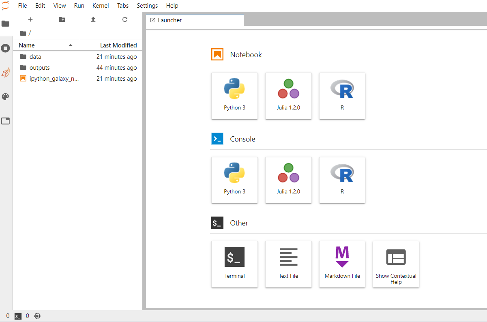
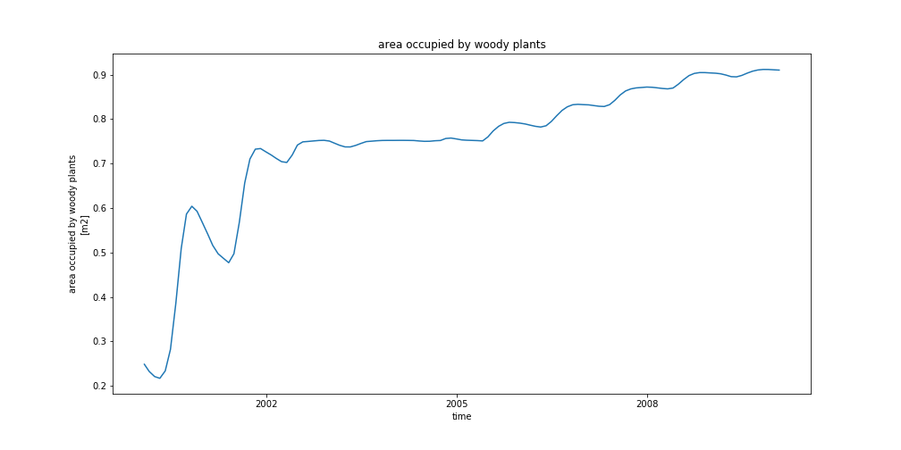
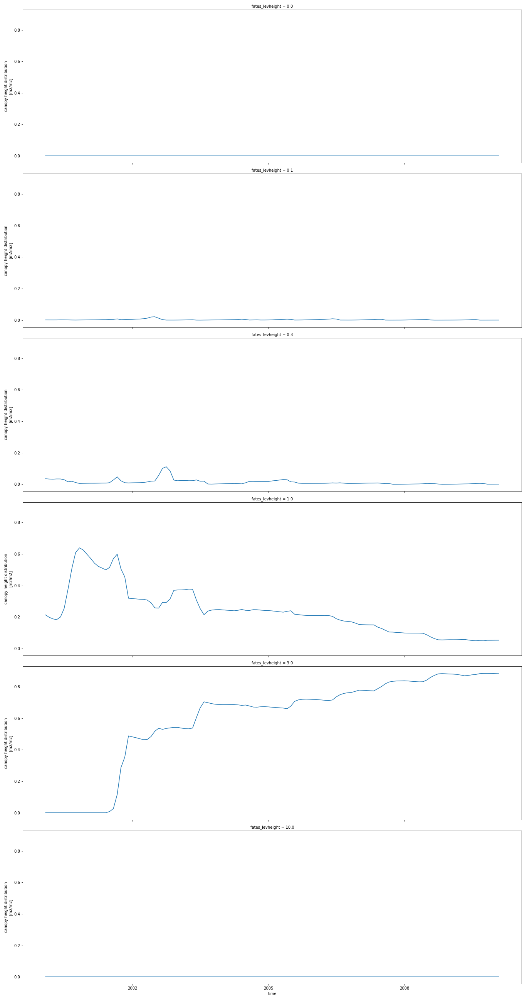

Functionally Assembled Terrestrial Ecosystem Simulator (FATES) with Galaxy Climate JupyterLab
 Anne Fouilloux
Anne Fouilloux
Overview
question Questionsobjectives Objectives
Why and when using Galaxy Climate JupyterLab for CLM-FATES?
How to start Galaxy Climate JupyterLab in Galaxy?
How to upload input data for running CLM-FATES?
How to create CLM-FATES case in Galaxy Climate JupyterLab?
How to customize your run?
How to analyze your model outputs?
How to save your model results into a Galaxy history?
How to share your results?
requirements Requirements
Motivation for using the Galaxy Climate JupyterLab for CLM-FATES.
Setting up CLM-FATES case with Galaxy Climate JupyterLab.
Running CLM-FATES in Galaxy for single-point locations where in-situ measurements are available.
Analyzing CLM-FATES results.
Sharing CLM-FATES simulations.
Composing, executing and publishing the corresponding Jupyter notebooks.
- Introduction to Galaxy Analyses
- Climate
- User Interface and Data Manipulation
- JupyterLab in Galaxy: tutorial hands-on
- Programming with Python
- The Unix Shell
time Time estimation: 6 hours
Supporting Materials
last_modification Last modification: Jan 6, 2021
Introduction
The practical aims at familiarizing you with running CLM-FATES within Galaxy Climate JupyterLab.
Agenda
In this tutorial, we will cover:
comment Background
FATES is the “Functionally Assembled Terrestrial Ecosystem Simulator”. FATES needs what we call a “Host Land Model” (HLM) to run and in this tutorial we will be using the Community Land Model of the Community Terrestrial Systems Model (CLM-CTSM). FATES was derived from the CLM Ecosystem Demography model (CLM(ED)), which was documented in Taking off the training wheels: the properties of a dynamic vegetation model without climate envelopes, CLM4.5(ED) 2015. and this technical note was first published as an appendix to that paper. The FATES documentation will provide some more insight on FATES too.
Motivation
In this tutorial, we will be using a Galaxy interactive tool called Galaxy Climate JupyterLab for running CLM-FATES. This interactive tool is only available from LiveGalaxy.eu.
This platform is meant to be used for:
- preparing new input datasets;
- testing new versions of fates, including code changes;
- developing new notebooks for analyzing and showing the model results;
- creating interactive publications (notebooks);
- teaching purposes.
The main advantage over the Galaxy CLM-FATES tool is that you can run any versions of FATES, including developments that are not released yet. However, it is not recommended to run more than a few decades of simulation time. In that particular case, we would suggest to use the Galaxy CLM-FATES Galaxy tool.
comment CML-FATES in JupyterLab versus CLM-FATES Galaxy tool
Do not use the interactive Galaxy Climate JupyterLab for running long and “operational” simulations and do not forget that you need to save back your results to your Galaxy history or local machine before stopping your JupyterLab.
Step-1: Get data
hands_on Hands-on: Data upload
- Create a new history for this tutorial. If you are not inspired, you can name it fates-jupyterlab.
tip Tip: Creating a new history
Click the new-history icon at the top of the history panel
If the new-history is missing:
- Click on the galaxy-gear icon (History options) on the top of the history panel
- Select the option Create New from the menu
Import the files from Zenodo or from the shared data library
https://zenodo.org/record/4108341/files/inputdata_version2.0.0_ALP1.tartip Tip: Importing data via links
- Copy the link location
Open the Galaxy Upload Manager (galaxy-upload on the top-right of the tool panel)
- Select Paste/Fetch Data
Paste the link into the text field
Press Start
- Close the window
By default, Galaxy uses the URL as the name, so rename the files with a more useful name.
tip Tip: Importing data from a data library
As an alternative to uploading the data from a URL or your computer, the files may also have been made available from a shared data library:
Go into Shared data (top panel) then Data libraries
Find the correct folder (ask your instructor)
- Select the desired files
- Click on the To History button near the top and select as Datasets from the dropdown menu
- In the pop-up window, select the history you want to import the files to (or create a new one)
- Click on Import
Check the datatype is tar
tip Tip: Changing the datatype
- Click on the galaxy-pencil pencil icon for the dataset to edit its attributes
- In the central panel, click on the galaxy-chart-select-data Datatypes tab on the top
- Select
datatypes- Click the Change datatype button
Rename Datasets
As “https://zenodo.org/record/4108341/files/inputdata_version2.0.0_ALP1.tar” is not a beautiful name and can give errors for some tools, it is a good practice to change the dataset name by something more meaningfull. For example by removing
https://zenodo.org/record/4108341/files/to obtaininputdata_version2.0.0_ALP1.tar, respectively.tip Tip: Renaming a dataset
- Click on the galaxy-pencil pencil icon for the dataset to edit its attributes
- In the central panel, change the Name field
- Click the Save button
Add a tag to the dataset corresponding to
fates-jupyterlabtip Tip: Adding a tag
- Click on the dataset
- Click on galaxy-tags Edit dataset tags
Add a tag starting with
#Tags starting with
#will be automatically propagated to the outputs of tools using this dataset.- Check that the tag is appearing below the dataset name
Step-2: Opening up Climate JupyterLab
hands_on Hands-on: Launch JupyterLab for Ocean / Atmosphere / Land / Climate Python ecosystem in Galaxy
Currently JupyterLab for Ocean / Atmosphere / Land / Climate Python ecosystem in Galaxy is available on Live.useGalaxy.eu only. JupyterLab for Ocean / Atmosphere / Land / Climate Python ecosystem and not the default JupyterLab in Galaxy contains all the python packages and additional software we need for running Earth System Model, including Functionally Assembled Terrestrial Ecosystem Simulator (FATES). The default JupyterLab in Galaxy would not be sufficient for executing all the tasks in th is tutorial.
- Open the JupyterLab tool tool by clicking here​ with the following par ameters:
- Click Execute
- The tool will start running and will stay running permanently
- Click on the “User” menu at the top and go to “Active Interactive Tools” and locate the JupyterLab instance you started.
- Click on your JupyterLab instance (please not that it may take a few minutes before you can click on the link to your jupyterLab instance).
You should now be looking at a page with the JupyterLab interface:

Step-3: Create a new session CLM-FATES in JupyterLab
Import input data to JupyterLab
In this part of the tutorial, we will be using the existing Jupyter Notebook called ipython_galaxy_notebook.ipynb
hands_on Hands-on: Open a JupyterLab Terminal
To open ipython_galaxy_notebook.ipynb, double click on it. More information on the JupyterLab interface can be found on the JupyterLab documentation.
Import the FATES input dataset from your history:
- In a new code cell:
%%bash get -i inputdata_version2.0.0_ALP1.tar -t nameBy default code cells execute Python 3 code (default kernel) so to execute the Shell command lines we will use
%%bash. In that case the cell runs with bash in a subprocess.Then untar this file:
%%bash mkdir $HOME/inputdata tar xf /import/inputdata_version2.0.0_ALP1.tar --directory $HOME/inputdata
comment Direct download in JupyterLab from Zenodo
You may also download the input dataset directly from Zenodo.
- Open a JupyterLab Terminal and enter the following command:
%%bash cd /import wget https://zenodo.org/record/4108341/files/inputdata_version2.0.0_ALP1.tar
comment Using JupyterLab Terminal
Most of the tutorial (except visualization) can be executed from a JupyterLab Terminal. In that case, you should not add
%%bashto your commands. More on JupyterLab Terminal can be found here.
Get CLM-FATES EMERALD release
hands_on Hands-on: Clone CLM-FATES for Nordic sites
%%bash conda create --name fates -y fates-emerald=2.0.1The command above is required once only. It creates a new conda environment called fates and install fates-emerald version 2.0.1 conda package. It is important to always specify the version of CLM-FATES you would like to use as it needs to match your input dataset. Now a new fates conda environment has been created in your current JupyterLab session and can be use every time you activate it.
Then to activate this new conda environment:
%%bash source activate fatesPlease note that you would need to activate fates environment in every new code cell (because it starts a new Shell subprocess).
Create CLM-FATES new case
hands_on Hands-on: Create CLM-FATES new case for ALP1 site
%%bash source activate fates create_newcase --case $HOME/ctsm_cases/fates_alp1 --compset 2000_DATM%1PTGSWP3_CLM50%FATES_SICE_SOCN_MOSART_SGLC_SWAV --res 1x1_ALP1 --machine espresso --run-unsupported
warning Command not found!
If you get an error when invoking
create_newcasemake sure you have switch to fates conda environment:%%bash source acticate fates create_newcase --help
The 4 main arguments of create_newcase are explained on the figure below:  .
.
- case: specifies the name and location of the case being created. It creates a new case in
$HOME/ctsm_cases/and its name isfates_alp1. make sure to give a meaningful name to your FATES experiments. - res: specifies the model resolution (resolution of the grid). Here 1x1_ALP1 corresponds to a single point resolution.
- compset: specifies the component set, i.e., component models, forcing scenarios and physics options for those models.
- The long name of the compset we have chosen is
2000_DATM%1PTGSWP3_CLM50%FATES_SICE_SOCN_MOSART_SGLC_SWAV - The notation for the compset longname is:
TIME_ATM[%phys]_LND[%phys]_ICE[%phys]_OCN[%phys]_ROF[%phys]_GLC[%phys]_WAV[%phys][_BGC%phys] - The compset longname has the specified order: atm, lnd, ice, ocn, river, glc wave cesm-options where:
- Initialization Time:2000
- Atmosphere: Data atmosphere DATM%1PTGSWP3
- Land: CLM50%FATES
- Sea-Ice: SICE Stub ICE
- Ocean: SOCN Stub ocean
- River runoff:MOSART: MOdel for Scale Adaptive River Transport
- Land Ice: SGLC Stub Glacier (land ice) component
- Wave- SWAV Stub wave component The list of available component set is given here.
- The long name of the compset we have chosen is
- mach: specifies the machine where CLM-FATES will be compiled and run. We use
espressowhich is the local setup (see$HOME/.cime/folder).
Setup, build and submit your first simulation
hands_on Hands-on: Setup, build and submit
Check the content of the directory and browse the sub-directories:
- CaseDocs: namelists or similar
- SourceMods: this is where you can add local source code changes.
- Tools: a few utilities (we won’t use them directly)
- Buildconf: configuration for building each component For this tutorial, we wish to have a “cold” start as we are mostly interested in setting up our model. When ready to run in production, the model needs to be spin-up (run for several centuries until it reaches some kind of equilibrium).
We will first make a short simulation (6 months):
%%bash source activate fates cd $HOME/ctsm_cases/fates_alp1 ./case.setup ./case.build ./xmlchange STOP_OPTION=nmonths # set the simulation periods to "nmonths" ./xmlchange STOP_N=6 # set the length of simulation, i.e, how many months ./case.submit > case_submit.out 2>&1The step above can take a lot of time because it needs to compile and run the FATES model. Therefore we suggest you make a break and come back later (or the following day) before you continue the tutorial.
Check your run
hands_on Hands-on: check your simulation
- From a new code cell:
%%bash cd $HOME/work/fates_alp1 ls -laYou should see two folders:
- bld: contains the object and CESM executable (called cesm.exe) for your configuration
- run: this directory will be used during your simulation run to generate output files, etc.
The bld folder contains the model executable (called
cesm.exe) while run contains all the files used for running CLM-FATES (and not already archived). Once your run is terminated, many files are moved from the run folder to the archive folder:%%bash cd $HOME/archive/fates_alp1 ls lnd/histWe are interested in the “history” files from the CLM-FATES model and these files are all located in
lnd/histfolder. You can also check other model components in the archive directory (atm, etc.): in our case, it is not of a great interest as we are running the CLM-FATES component. We have run a very short simulation and get one file only, calledfates_alp1_t.clm2.h0.2000-01.nc. The CLM-FATES model outputs are stored in netCDF format.comment What is a netCDF file?
Netcdf stands for “network Common Data Form”. It is self-describing, portable, metadata friendly, supported by many languages (including python, R, fortran, C/C++, Matlab, NCL, etc.), viewing tools (like panoply, ncview/ncdump) and tool suites of file operators (in particular NCO and CDO).
- Create a new Jupyter Notebook for analyzing your results:
- From the File Menu –> New –> Notebook:
- Rename your notebook to check_analysis.ipynb
- All the analysis of the 6 month FATES simulation will be done from this notebook
- Get metadata In a Code cell:
import os import xarray as xr xr.set_options(display_style="html") %matplotlib inline case = 'fates_alp1' path = os.path.join(os.getenv('HOME'), 'archive', case, 'lnd', 'hist') dset = xr.open_dataset(path + '/fates_alp1.clm2.h0.2000-01.nc') dsetAs shown above, we are now using Python 3 for analyzing the results and xarray which is a Python package that can easily handle netCDF files. we opened the single history file and print metadata.
- Plotting 1D variables (timeseries)
You can select a variable by using its short name (see metadata above) and then calling the plot method:
dset['AREA_TREES'].plot()As we ran 6 months only, we have very little points in our timeseries!
To plot 2D variables such as CANOPY_AREA_BY_AGE, you can use the col_wrap option when plotting:
dset['CANOPY_AREA_BY_AGE'].plot(aspect=3, size=6, col='fates_levage', col_wrap=1)In the plot above, we have one plot per row (col_wrap=1) and we will have a plot for each value of the fates_levage dimension. We also changed the aspect of the plot (aspect=3, size=6).
Customize your run
hands_on Hands-on: Run 10 years
%%bash source activate fates cd $HOME/ctsm_cases/fates_alp1 ./xmlchange RUN_STARTDATE=0001-01-01 # set up the starting date of your simulation ./xmlchange STOP_OPTION=nyears # set the simulation periods to "years" ./xmlchange STOP_N=5 # set the length of simulation, i.e, how many years ./xmlchange CONTINUE_RUN=TRUE # if you want to continue your simulation from restart file, set it to TRUE ./xmlchange RESUBMIT=1 # set up how many times you want to resubmit your simulation. # e.g, STOP_N=5, RESUBMIT=1, you will have simulation for 5+5*1=10 ./xmlchange DATM_CLMNCEP_YR_START=1901 # set up the start year of the atmospheric forcing ./xmlchange DATM_CLMNCEP_YR_END=1910 # set up the end year of the atmospheric forcing ./case.submit > case_submit_sontinue_run.out 2>&1This step will take several hours.
Analysis
In this section, we will be able to analyze your 10 year simulation only when the run is terminated (note that data will be moved to the archive folder every 5 years).
Analyzing FATES-CLM model outputs
hands_on Hands-on: Open a new Python notebook
- Create a notebook by clicking the
+button in the file browser and then selecting a kernel in the new Launcher tab:- Rename your notebook to analyse_case.ipynb Get more information online at JupyterLab notebooks.
Use xarray to read and plot
In this section, we give additional examples on how to visualize your results using xarray:
import xarray as xr
xr.set_options(display_style="html")
%matplotlib inline
case = 'fates_alp1'
path = os.path.join(os.getenv('HOME'), 'archive', case, 'lnd', 'hist')
dset = xr.open_mfdataset(path + '/*.nc', combine='by_coords')
dset
As you can see, we are now using open_mfdataset to read all the netCDF files available in the history folder.
The option combine='by_coords') is used to tell the method open_mfdataset how to combine the different files
together.
You can use the same plot method as before for plotting any variable. For instance:
dset['AREA_TREES'].plot(aspect=3, size=6)
For saving your plot, for instance in a png file format:
import matplotlib.pyplot as plt
fig = plt.figure(1, figsize=[14,7])
ax = plt.subplot(1, 1, 1)
dset['AREA_TREES'].plot(ax=ax)
ax.set_title(dset['AREA_TREES'].long_name)
fig.savefig('AREA_TREES.png')

In the plot above, we create a figure (with specific dimension [14,7]) and one subplot with one row and one column. The last argument of subplot is the index (1) of this particular subplot.
Finally, the resulting figure is saved in a file called ‘AREA_TREES.png’.
To plot 2D variables and save the resulting plot in a png file, for instance CANOPY_HEIGHT_DIST:
p = dset['CANOPY_HEIGHT_DIST'].plot(aspect=3, size=6, col_wrap=1, col='fates_levheight')
p.fig.savefig('CANOPY_HEIGHT_DIST.png')

Save your results to your Galaxy history
hands_on Hands-on: Put your data to your Galaxy history
%%bash cd $HOME tar cvf archive_emerald_fates_test.tar archiveThen you are now ready to put your dataset into Galaxy. As it can be large, we recommend to use FTP:
curl -T {"archive_emerald_fates_test.tar"} ftp://ftp.usegalaxy.eu --user USER:PASSWORD --sslWhere you replace
USERby your galaxy username (what you used to login to Galaxy i.e. usually your email address andPASSWORDby your Galaxy login password.To get
archive_emerald_fates_test.tarin your history:
- Open the Galaxy Upload Manager (galaxy-upload on the top-right of the tool panel)
- Click on Choose FTP files and select
archive_emerald_fates_test.tarto import it into your history.And make sure to save all your notebooks to your Galaxy history too:
%%bash put -p ipython_galaxy_notebook.ipynb put -p check_analysis.ipynb put -p analyse_case.ipynb put -p AREA_TREES.png put -p CANOPY_HEIGHT_DIST.png
warning Danger: You can lose data!
If you do not copy data (FATES model results, jupyter notebooks, plots, etc.) before you stop your Galaxy climate JupyterLab tool, all your results will be lost!
Share your work
One of the most important features of Galaxy comes at the end of an analysis. When you have published striking findings, it is important that other researchers are able to reproduce your in-silico experiment. Galaxy enables users to easily share their workflows and histories with others.
To share a history, click on the galaxy-gear icon in the history panel and select Share or Publish. On this page you can do 3 things:
- Make History Accessible via Link. This generates a link that you can give out to others. Anybody with this link will be able to view your history.
- Make History Accessible and Publish. This will not only create a link, but will also publish your history. This means your history will be listed under
Shared Data → Historiesin the top menu. - Share with a user. This will share the history only with specific users on the Galaxy instance.
comment Permissions
Different servers have different default permission settings. Some servers create all of your datasets completely private to you, while others make them accessible if you know the secret ID.
Be sure to select Also make all objects within the History accessible whenever you make a history accessible via link, otherwise whomever you send your link to might not be able to see your history.
hands_on Hands-on: Share history
- Share your history with your neighbour.
- Find the history shared by your neighbour. Histories shared with specific users can be accessed by those users under their top masthead “User” menu under
Histories shared with me.
comment Clone CLM-FATES release for Nordic site from github (advanced)
You may also get the CLM-FATES release 2.0.1 directly from github:
%%bash cd $HOME git clone -b release-emerald-platform2.0.1 https://github.com/NordicESMhub/ctsm.git cd ctsm ./manage_externals/checkout_externalsThis approach may be interesting if you wish to run another release or development version of CLM-FATES. All the tutorial shown can be done with your local version. In that case, you would need to use the local command such as
create__newcasewhich then require the following steps:
- locate the command on your local folder; for instance to locate
create_newcase:%%bash cd $HOME/ctsm find . -name create_newcaseThe command above will give you the location of
create_newcase:./cime/scripts/create_newcaseBe aware that it is a relative path. Then to create a new case:
./cime/scripts/create_newcase --case $HOME/ctsm_cases/fates_alp1_local --compset 2000_DATM%1PTGSWP3_CLM50%FATES_SICE_SOCN_MOSART_SGLC_SWAV --res 1x1_ALP1 --machine espresso --run-unsupportedFinally, if you wish to make changes to the source code, we recommend first to add your changes in different folder and use the option
--user-mods-dirwhen creating your case. In addition, you should make sure to use version control to save your changes. If you are not familiar withgit, you could also save your changes in the corresponding Galaxy history.
Conclusion
We have learnt to run single-point simulations with FATES-CLM through the Galaxy Climate JupyterLab.
keypoints Key points
Galaxy Climate JupyterLab
CLM-FATES
Model analysis
References
- Taking off the training wheels: the properties of a dynamic vegetation model without climate envelopes, CLM4.5(ED), 2015. 10.5194/gmd-8-3593-2015
Feedback
Did you use this material as an instructor? Feel free to give us feedback on how it went.

Citing this Tutorial
- Anne Fouilloux, 2021 Functionally Assembled Terrestrial Ecosystem Simulator (FATES) with Galaxy Climate JupyterLab (Galaxy Training Materials). /training-material/topics/climate/tutorials/fates-jupyterlab/tutorial.html Online; accessed TODAY
- Batut et al., 2018 Community-Driven Data Analysis Training for Biology Cell Systems 10.1016/j.cels.2018.05.012
details BibTeX
@misc{climate-fates-jupyterlab, author = "Anne Fouilloux", title = "Functionally Assembled Terrestrial Ecosystem Simulator (FATES) with Galaxy Climate JupyterLab (Galaxy Training Materials)", year = "2021", month = "01", day = "06" url = "\url{/training-material/topics/climate/tutorials/fates-jupyterlab/tutorial.html}", note = "[Online; accessed TODAY]" } @article{Batut_2018, doi = {10.1016/j.cels.2018.05.012}, url = {https://doi.org/10.1016%2Fj.cels.2018.05.012}, year = 2018, month = {jun}, publisher = {Elsevier {BV}}, volume = {6}, number = {6}, pages = {752--758.e1}, author = {B{\'{e}}r{\'{e}}nice Batut and Saskia Hiltemann and Andrea Bagnacani and Dannon Baker and Vivek Bhardwaj and Clemens Blank and Anthony Bretaudeau and Loraine Brillet-Gu{\'{e}}guen and Martin {\v{C}}ech and John Chilton and Dave Clements and Olivia Doppelt-Azeroual and Anika Erxleben and Mallory Ann Freeberg and Simon Gladman and Youri Hoogstrate and Hans-Rudolf Hotz and Torsten Houwaart and Pratik Jagtap and Delphine Larivi{\`{e}}re and Gildas Le Corguill{\'{e}} and Thomas Manke and Fabien Mareuil and Fidel Ram{\'{\i}}rez and Devon Ryan and Florian Christoph Sigloch and Nicola Soranzo and Joachim Wolff and Pavankumar Videm and Markus Wolfien and Aisanjiang Wubuli and Dilmurat Yusuf and James Taylor and Rolf Backofen and Anton Nekrutenko and Björn Grüning}, title = {Community-Driven Data Analysis Training for Biology}, journal = {Cell Systems} }